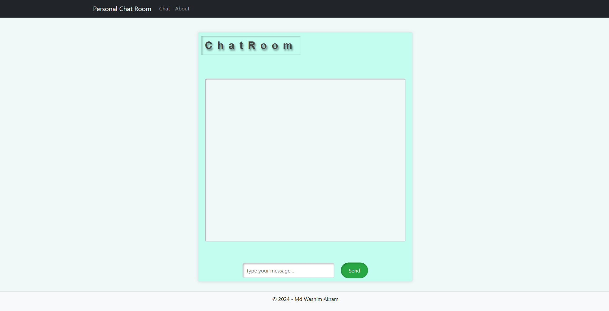
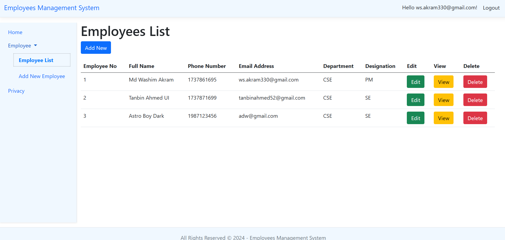
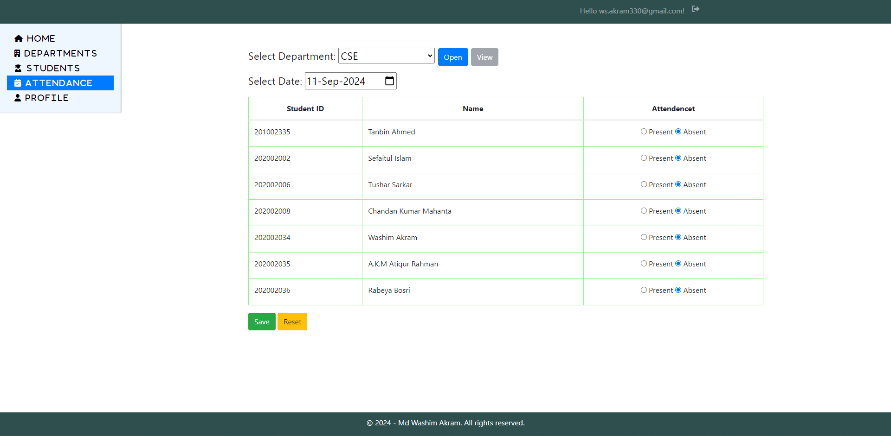
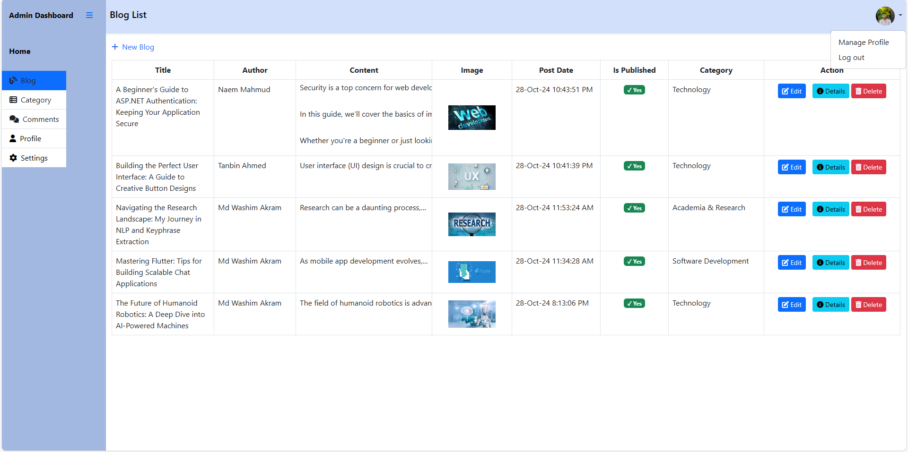

Featured Projects & Products
Real-world enterprise production systems, full-stack web applications, real-time communication hubs, and desktop automation.
Centralized Complaint Management System
Built for the entire AkijBashir Group using ASP.NET Core Web API and Angular. Currently running live in production across Bathware and Sanitaryware units, designed with scalable multi-tenant architecture for seamless group-wide rollout.
Glass Manufacturing Production Module
Developed and deployed a full production lifecycle management module for Akij Glass Industries Ltd. Built using ASP.NET Core Web API, Angular, MS SQL Server, and integrated SSRS (MS Report Server) for automated batch reporting.

SignalR ChatHub & Log Management
Real-time messaging hub and activity log system developed with ASP.NET Core, SignalR, and MudBlazor. Features WebSocket channels, presence tracking, role-based authorization, and centralized logging.

Blazor Employee Management Portal
A responsive enterprise web application built using Blazor WebAssembly and MudBlazor components, backed by Entity Framework Core and SQL Server. Implements advanced search, multi-column filtering, and server-side pagination.

Student Attendance Management (MVC)
A streamlined, robust administrative system engineered with ASP.NET MVC and MS SQL Server to oversee department structures, student enrollment, and automated attendance reporting with clean CRUD controllers.
Modern React & TypeScript Todo App
A responsive task management application built with React, TypeScript, and Bootstrap. Features state persistence, task priority filtering, and clean component-driven architecture.
EMed Store & XML Processor
C# Windows Forms applications engineered for enterprise retail management and automated XML data parsing, filtering, and high-performance search routines.

Enterprise Personal Blog & CMS
A complete blog publishing platform built using ASP.NET MVC. Includes rich article authoring, user comments, category management, and an administrative dashboard.